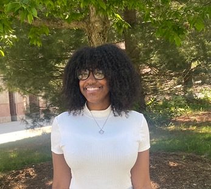

back to reading responses
actually, i'm kailah.
i tell bad jokes.
I'm Kailah. I am a 20 year old artist, designer, and soon enough, social worker.
I have a million interests, but only one passion: helping people.
I don't know what exactly I want to leave as a legacy,
but I know that if I can combine my love for art, technology and social justice, it will be good.
I was diagnosed with autism freshman year of college, I'm from Chicago,
I think being called quirky is an insult, and I have the palette of a 3 year old. My shoes are never tied and my front teeth overlap a little but I'm always smiling.
I hope you have fun looking through the things I've created in Grey's class.

let's chat: